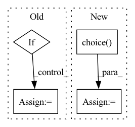

Pattern ID :29578
Before Change
def test_model(df, model, vec_len, file_type, n_trees, encode_IP):
if encode_IP == "word2vec":
ann_ip, ip_dic, ann_port, port_dic, ann_proto, proto_dic = \
build_annoy_dictionary_word2vec(
csv=df,
model=model,
length=vec_len,After Change
for col in word2vec_cols:
type = col.encoding.split("_")[1]
word = random.choice( df[col.column])
print("Testing {col.column}...")
test_embed_bidirectional(
model_path=model_path,
ann=dict_type_annDictPair[type][0],In pattern: SUPERPATTERN
Frequency: 3
Non-data size: 4
Instances Fragment ID: 87716058
Project Name: netsharecmu/netshare
Commit Name: d70172d6896e53108139cba7cf29686ca669c59d
Time: 2023-03-27
Author: yyin4@andrew.cmu.edu
File Name: netshare/pre_post_processors/netshare/word2vec_embedding.py
M Class Name: AnonimousClass
N Class Name: AnonimousClass
M Method Name: test_model(5)
N Method Name: test_model(6)
M Parent Class:
N Parent Class:
M File Name: netshare/pre_post_processors/netshare/word2vec_embedding.py
N File Name: netshare/pre_post_processors/netshare/word2vec_embedding.py
M Start Line: 52
M End Line: 80
N Start Line: 36
N End Line: 54
Before Change
G = nx.DiGraph()
num_node = 20
for i in range(num_node):
if i < 10:
node_feature = torch.rand([1, ])
node_type = "n1"
node_label = 0
G.add_node(
i,
node_type=node_type,
node_label=node_label,
node_feature=node_feature,
)
else:
node_feature = torch.rand([1, ])
node_type = "n2"
node_label = 1
G.add_node(After Change
num_node = 20
node_label_options = [0, 1, 2, 3]
edge_label_options = [0, 1, 2]
for i in range(num_node):
node_feature = torch.rand([1, ])
if i < 10:
node_type = "n1"
else:
node_type = "n2"
node_label = random.choice( node_label_options)
G.add_node(
i,
node_type=node_type,
node_label=node_label, Fragment ID: 87716059
Project Name: snap-stanford/deepsnap
Commit Name: d77a281f4444a1ce0c9e3bd60c8f33f4469c0e5f
Time: 2020-12-17
Author: xhe17@stanford.edu
File Name: tests/utils.py
M Class Name: AnonimousClass
N Class Name: AnonimousClass
M Method Name: generate_dense_hete_dataset(1)
N Method Name: generate_dense_hete_dataset(1)
M Parent Class:
N Parent Class:
M File Name: tests/utils.py
N File Name: tests/utils.py
M Start Line: 432
M End Line: 485
N Start Line: 417
N End Line: 463
Before Change
n_trees=n_trees,
encode_IP=encode_IP)
if encode_IP == "word2vec":
ip_word = str(df.at[10, "srcip"])
port_word = "443"
proto_word = str(df.at[10, "proto"])
After Change
n_trees=annoy_n_trees
)
for col in word2vec_cols:
type = col.encoding.split("_")[1]
word = random.choice( df[col.column])
print("Testing {col.column}...")
test_embed_bidirectional(
model_path=model_path,
ann=dict_type_annDictPair[type][0], Fragment ID: 87716048
Project Name: netsharecmu/netshare
Commit Name: d70172d6896e53108139cba7cf29686ca669c59d
Time: 2023-03-27
Author: yyin4@andrew.cmu.edu
File Name: netshare/pre_post_processors/netshare/word2vec_embedding.py
M Class Name: AnonimousClass
N Class Name: AnonimousClass
M Method Name: test_model(5)
N Method Name: test_model(6)
M Parent Class:
N Parent Class:
M File Name: netshare/pre_post_processors/netshare/word2vec_embedding.py
N File Name: netshare/pre_post_processors/netshare/word2vec_embedding.py
M Start Line: 52
M End Line: 80
N Start Line: 36
N End Line: 54
Before Change
// Update scheduler (manual)
if epoch < 54:
lr = 1e-3
elif = 1e-5
for g in optimizer.param_groups:
g["lr"] = lr
After Change
epoch += start_epoch
// Multi-Scale YOLO Training
if opt.multi_scale :
img_size = random.choice( range(10, 20)) * 32 // 320 - 608 pixels
dataloader = load_images_and_labels(train_path, batch_size=opt.batch_size, img_size=img_size, augment=True)
print("Running Epoch %g at multi_scale img_size %g" % (epoch, img_size))
Fragment ID: 87716055
Project Name: nightsnack/yolobile
Commit Name: dc7b58bb3c46c88e0f631528ef3ad274fee4126d
Time: 2018-11-05
Author: glenn.jocher@ultralytics.com
File Name: train.py
M Class Name: AnonimousClass
N Class Name: AnonimousClass
M Method Name: main(1)
N Method Name: main(1)
M Parent Class:
N Parent Class:
M File Name: train.py
N File Name: train.py
M Start Line: 42
M End Line: 116
N Start Line: 43
N End Line: 116